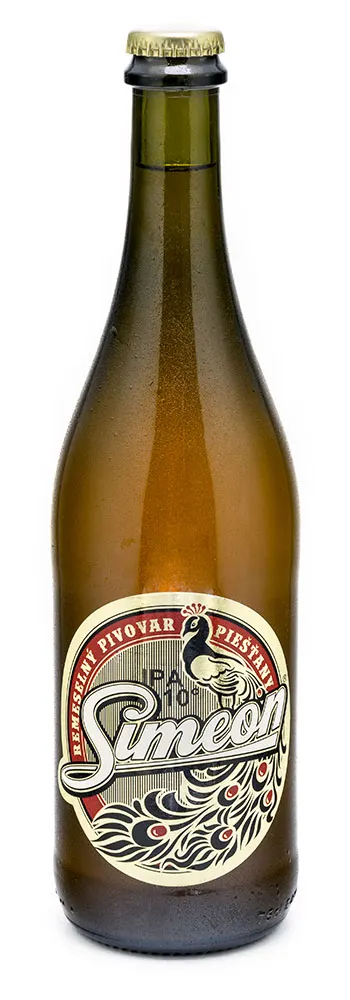
SIMEON 10°
Session IPA
Ľahké pivo. Príjemne horkastá chuť a vôňa IPY s nízkym obsahom alkoholu.
Chmeľ: Simcoe, Amarillo, Cascade, Crystal
- EPM
- 9,5
- IBU
- 31
- EBC
- 8
4,66 € / 1 l PET
Kúpiť v e-shopeRemeselný · piešťanský · rodinný
Nefiltrované, nepasterizované, bez chemických prísad. Rodinný pivovar, ktorý poctivo varí od roku 2016.
18+ Iba pre osoby staršie ako 18 rokov. / 18+ only. This site is for adults.
Naše pivo
Všetky pivá sú nefiltrované a nepasterizované. Údaje podľa pivovaru (EPM = stupňovitosť, IBU = horkosť, EBC = farba).

SIMEON 10°
Ľahké pivo. Príjemne horkastá chuť a vôňa IPY s nízkym obsahom alkoholu.
Chmeľ: Simcoe, Amarillo, Cascade, Crystal
4,66 € / 1 l PET
Kúpiť v e-shope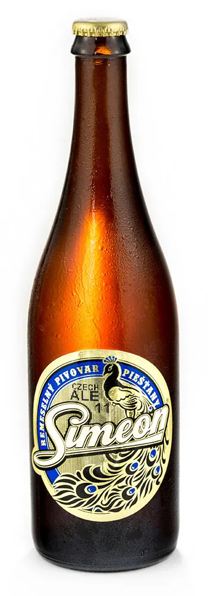
SIMEON 11°
Vyrobené zo štyroch druhov sladu a českých chmeľov. Chmeľová vôňa s koncovkou horkej zrnkovej kávy a hrianky.
Chmeľ: Sládek, Kazbek, Premiant, Agnus
Na objednávku – opýtajte sa na dostupnosť
Kúpiť v e-shope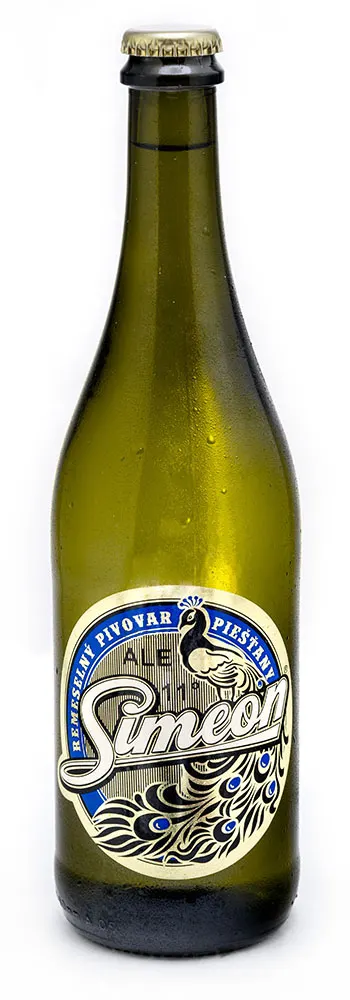
SIMEON 11,5°
ALE s nižším obsahom alkoholu. Bledá jantárová farba. Sladový úvod s jemným karamelom s kvetinovým nádychom.
Chmeľ: Columbus, Mosaic, Crystal
Na objednávku – opýtajte sa na dostupnosť
Kúpiť v e-shope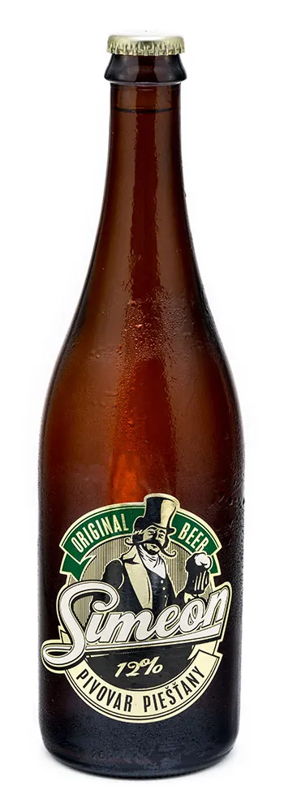
SIMEON 12°
Vyvážená chuť, čistá chmeľová vôňa s korenistým a horkastým zakončením.
Chmeľ: Sládek, Premiant, ŽPČ, Kazbek
4,66 € / 1 l PET
Kúpiť v e-shope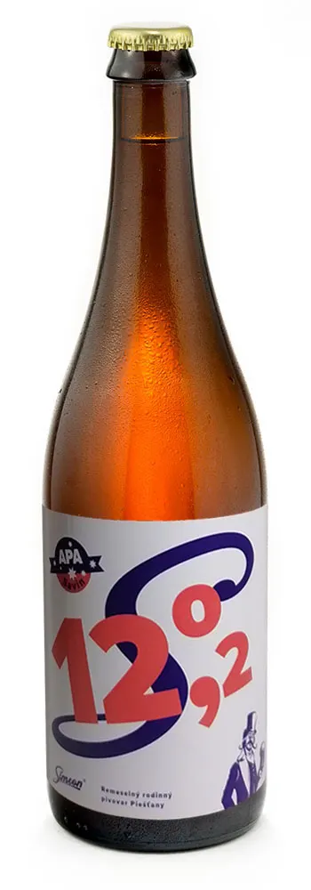
SIMEON 12,2°
Chmelené jedným najnovšie dopestovaným chmeľom v Austrálii. Veľmi svetlá APA jemne horká. Pridané vylisované hrozno z odrody Irsai Oliver zdôrazňuje vínovú vôňu a chuť.
Chmeľ: Enigma
Na objednávku – opýtajte sa na dostupnosť
Kúpiť v e-shope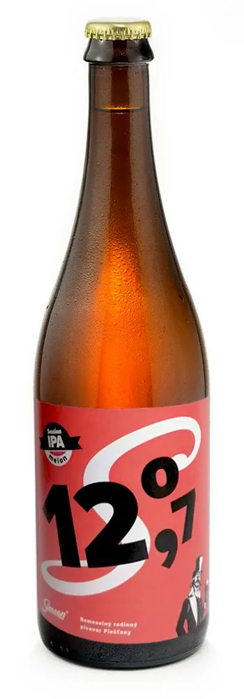
SIMEON 12,7°
Svieža ľahká IPA svetlej farby a veľmi príjemnej melónovej vône.
Chmeľ: Huell Melon, Denali
5,17 € / 1 l PET
Kúpiť v e-shope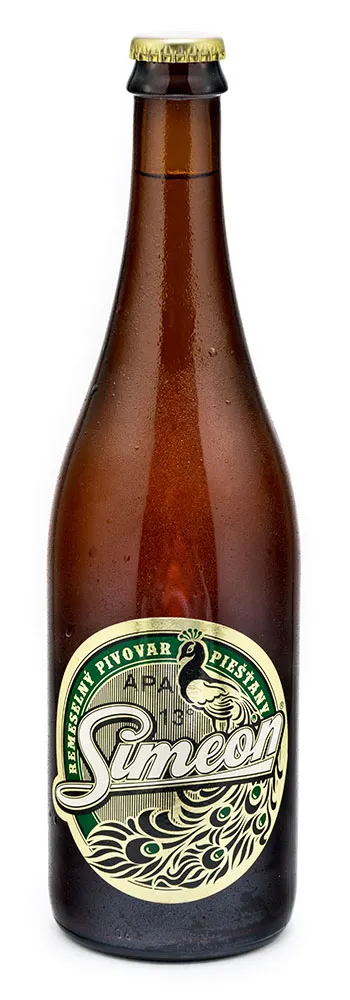
SIMEON 13°
Jantárová farba s výraznou arómou citrusov.
Chmeľ: Summit, Cascade, Citra
Na objednávku – opýtajte sa na dostupnosť
Kúpiť v e-shope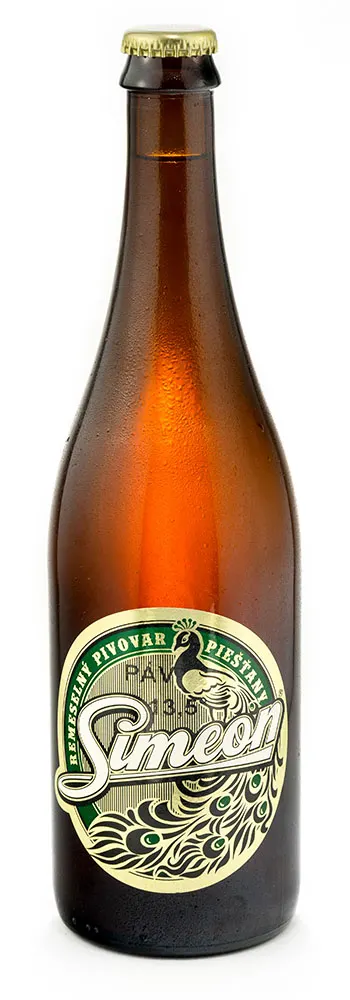
SIMEON 13,5°
Jemne citrusové svieže pivo so stálou svetlou penou, v ktorom nájdete chuť po hrozne, melóne a mangu.
Chmeľ: Summit, Cascade, Ekuanot
Na objednávku – opýtajte sa na dostupnosť
Kúpiť v e-shope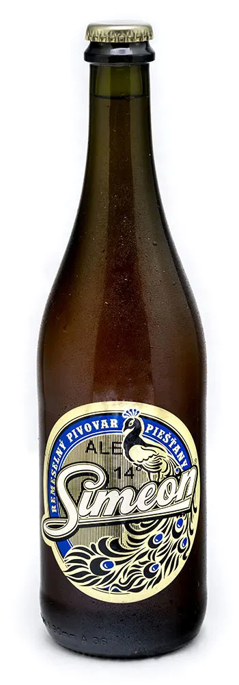
SIMEON 14°
Medená farba, krémová vyvážená plná chuť s vôňou karamelu, prechádzajúca do lesných plodov.
Chmeľ: Columbus, Mosaic, Mandarina Bavaria, Hallertau Blanc
Na objednávku – opýtajte sa na dostupnosť
Kúpiť v e-shope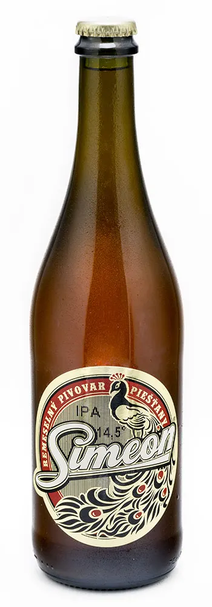
SIMEON 14,5°
Plná chuť s horkastou koncovkou, hustá pena s vôňou po pražených orieškoch, mandliach, citrusoch a kvetoch.
Chmeľ: Magnum, Centennial, Columbus
5,17 € / 1 l PET (Pistyan 14,5° IPA)
Kúpiť v e-shopeBalenie (všetky pivá): 0,75 l (sklo) · 1,0 l (PET) · 2,0 l (sklo s pákou) · 5 l (súdok) · 11 l (Party KEG) · 20 l a 30 l (KEG). V e-shope aj: SIMEON 14,7° Tropic NEIPA 1 l – 5,90 €.
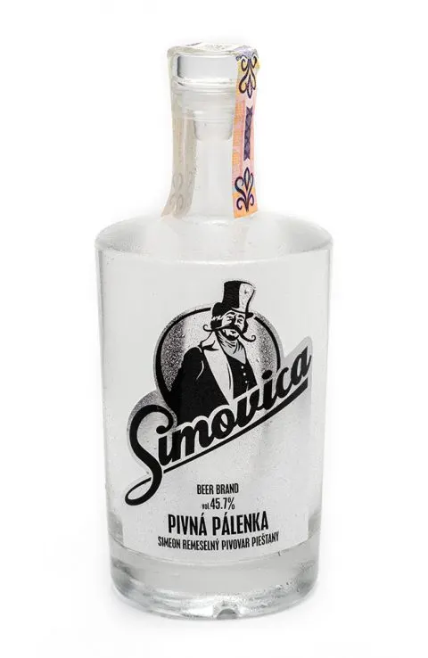
SIMOVICA
Pivná pálenka vysokej kvality. Zloženie: pivný destilát, voda. 0,5 l (sklo).
30,00 €
Kúpiť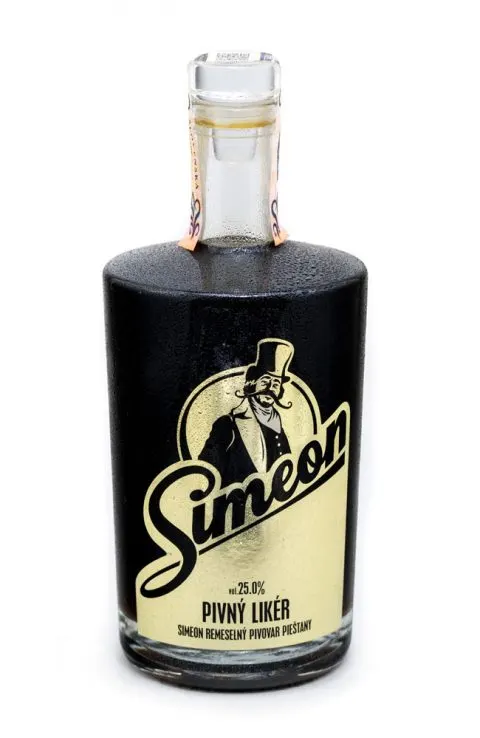
SIMEON
Pivný likér nezameniteľnej chuti. Voda, lieh, výťažok z tmavých sladov, tmavé pivo, cukor, kyselina askorbová. 0,5 l (sklo).
20,00 €
Kúpiť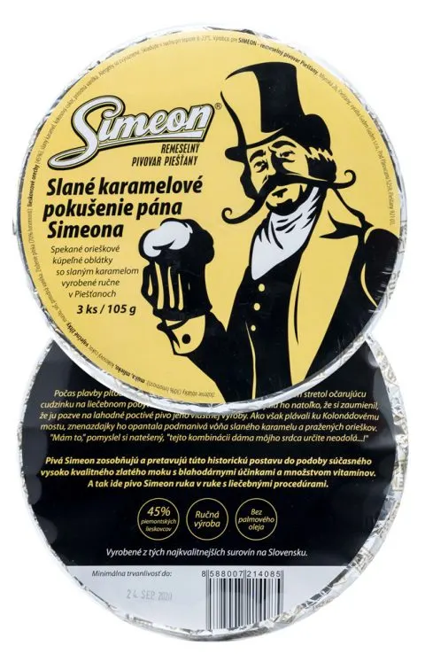
SIMEON
„Slané karamelové pokušenie pána Simeona“ – spekané orieškové kúpeľné oblátky so slaným karamelom, ručne vyrobené v Piešťanoch. 3 ks / 105 g.
ViacNáš príbeh
Kedy a kde sa zrodila myšlienka vlastného pivovaru? Rozpráva majiteľ a hlavný sládok Stanislav Slížik.
Simeon = „spravodlivý“. Spravodlivosť máme už v mene.
„Keďže spravodlivosť máme už v mene (Simeon – spravodlivý), staráme sa, aby pivo bolo poctivo uvarené, len z kvalitných surovín s použitím len tých najlepších chmeľov v spojení s piešťanskou vodou.“Stanislav Slížik, majiteľ remeselného pivovaru Simeon
„Kedysi, ešte ako študent SOU potravinárske som praxoval v pivovare Topvar v Topoľčanoch. Skúšal som svojpomocne variť so spolužiakmi pivo. Po malých množstvách, no o to s väčším nadšením. Neskôr však na túto záľubu nezostával čas popri iných povinnostiach, postupne som zabudol, ako nás to za študentských čias napĺňalo a ako sme sa tešili z každej jednej „vydarenej“ fľašky. Svoje oficiálne 1. pivo (v pivovare) som uvaril v pivovare Hlohovec. Pivovarnícku prax som postupne získal i počas môjho pôsobenia v pivovare Stein. Nastal pracovný kolobeh, prišla rodina, dieťa a na záľuby akosi nezostávalo veľa času. S manželkou sme medzičasom vybudovali firmu na výrobu sirupov a nealkoholických nápojov. No myšlienka na vlastný pivovar vo mne stále akosi podriemkávala. Keď som videl, ako moji bývalí spolužiaci a už i bývalí kolegovia zostali verní výrobe piva, nedalo mi to. Jasné, že mi práca na výrobe a zlepšovaní výroby piva veľmi chýbala. Napokon som pokušeniu podľahol a rozhodnutie do dnešného dňa neoľutoval. Vybudoval som vlastný malý remeselný pivovar. Našťastie mám pri sebe manželku, ktorá ma vždy podporuje a stojí pri mne. I dcéra za ten čas trošku podrástla a tak sa naša firma môže tešiť i na nasledovníčku. Každá jedna fľaška, či súdok, ktorý prejde mojimi rukami je pre mňa nesmierne dôležitý. Neustále pracujeme na novinkách s prihliadnutím na aktuálne a sezónne trendy.“
„V konkurenčnom mori malých pivovarov plávame zatiaľ veľmi ostražito. Sme tu pomerne krátko, no pivo bolo v našej rodine vždy vášňou. Náš príbeh je úprimný a jednoduchý. Koníček sa stal prácou a láska k pivu zvíťazila nad obavami z ťažkých začiatkov. Dobre viem ako navariť kvalitné pivo, preto v ňom nenájdete ani stopu chemických prísad, takisto pivo nefiltrujeme a nepasterizujeme. (…) Poctivo varené pivo už od roku 2016 si našlo obľubu u mnohých milovníkov piva, na akciách a festivaloch v rôznych regiónoch Slovenska a Čiech.“
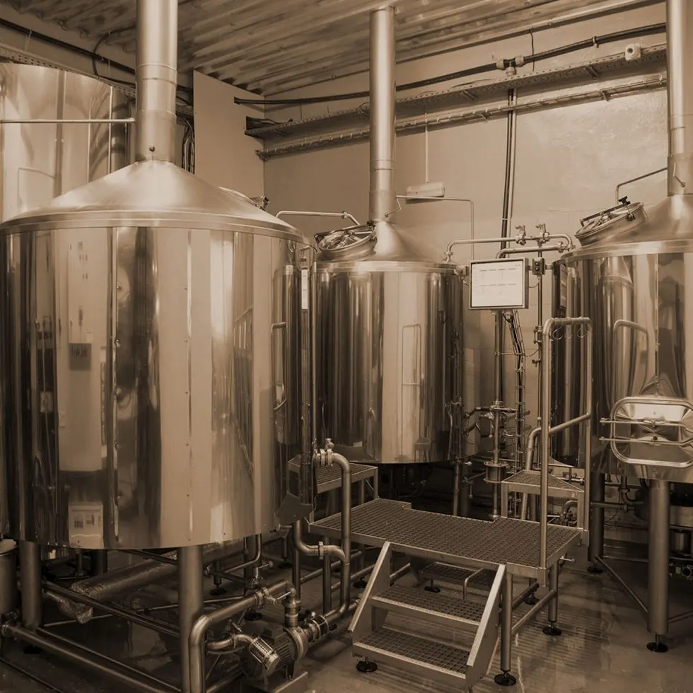
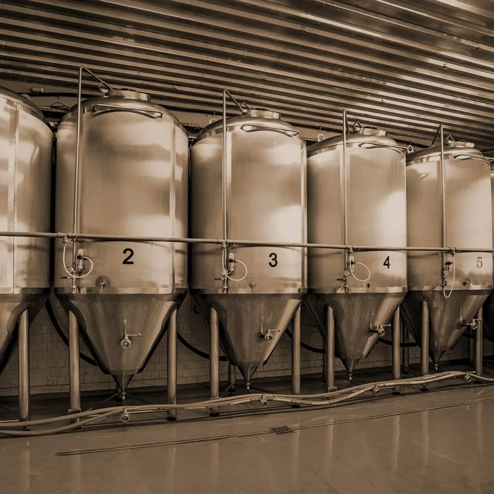
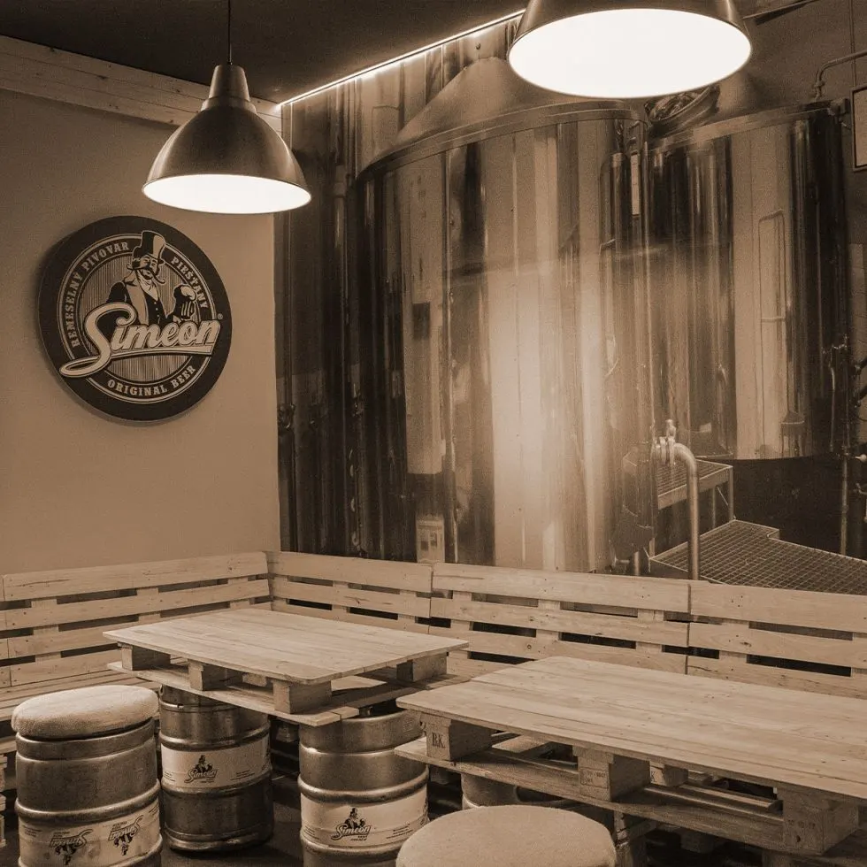
Prehliadky a degustácie
Prehliadka pivovaru s odborným výkladom o výrobe piva v našej novej degustačnej miestnosti. Minimálne 5 osôb – rezervácia e-mailom alebo telefonicky.
Každá ďalšia začatá 0,5 hod. 3 € / osoba · SIMOVICA 0,04 l 3 € · SIMEON pivný likér 0,04 l 2,50 € · možnosť objednania donáškového jedla. Darčekové poukazy pre 5 osôb: 75 € / 100 € / 125 €. Cenník (PDF) · Kúpiť poukaz
18+ Iba pre osoby staršie ako 18 rokov. / 18+ only. This site is for adults.
Obchod a darčeky
Vyberte si zo širokej ponuky našich pív a odneste si ich v štýlových darčekových baleniach – priamo v pivovare alebo online.
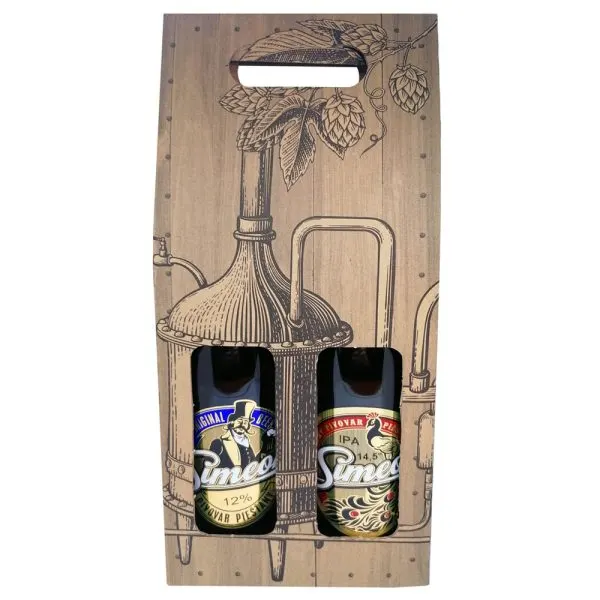
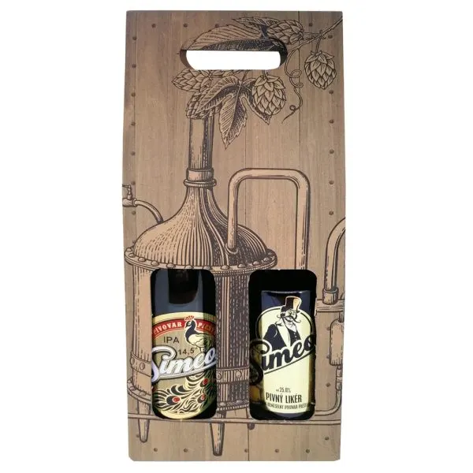
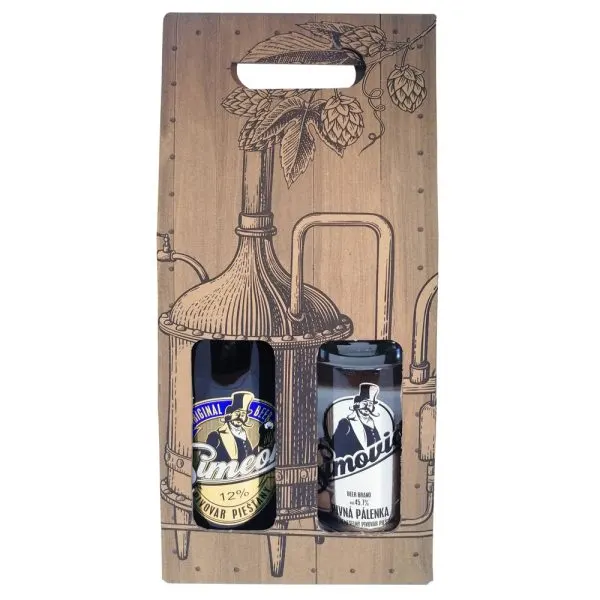
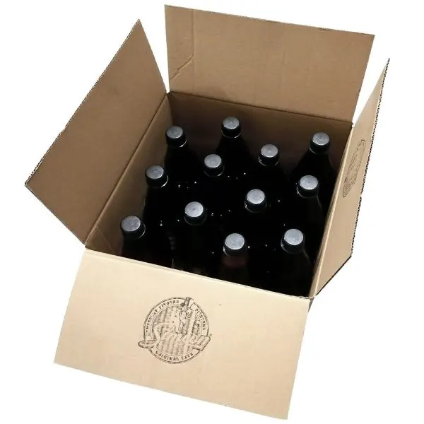
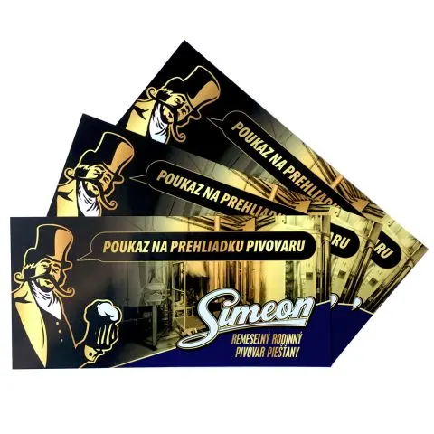
Možnosti sú limitované aktuálnou ponukou pivovaru Simeon.
Spolupráca
„Prvoradým cieľom je zaistiť obojstranne výhodnú spoluprácu a zabezpečiť spokojnosť všetkých zúčastnených strán.“ – Stanislav Slížik
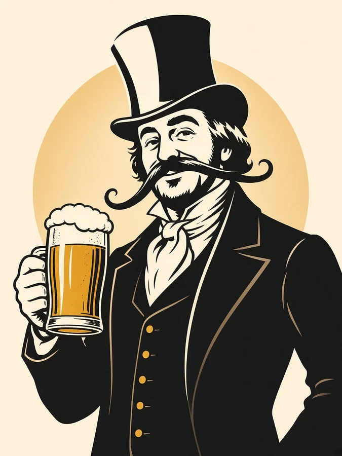
Zoznámte sa
Simon je gentleman v cylindri so zatočenými fúzmi – dobrosrdečná tvár nášho pivovaru. Dohliada, aby bolo všetko spravodlivé, presne ako hovorí naše meno: Simeon – „spravodlivý“.
Text potvrdí pivovar
Získané ocenenia
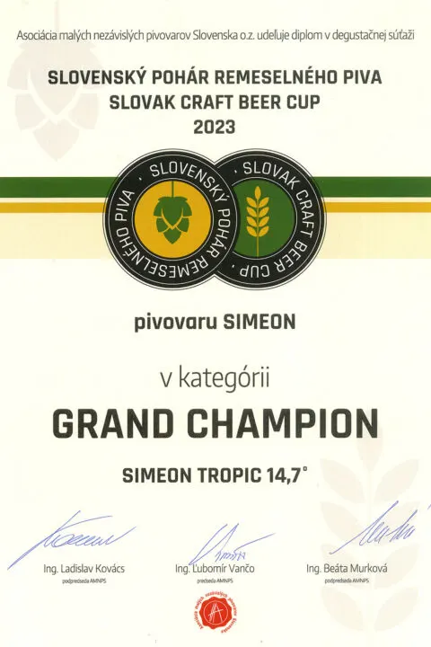
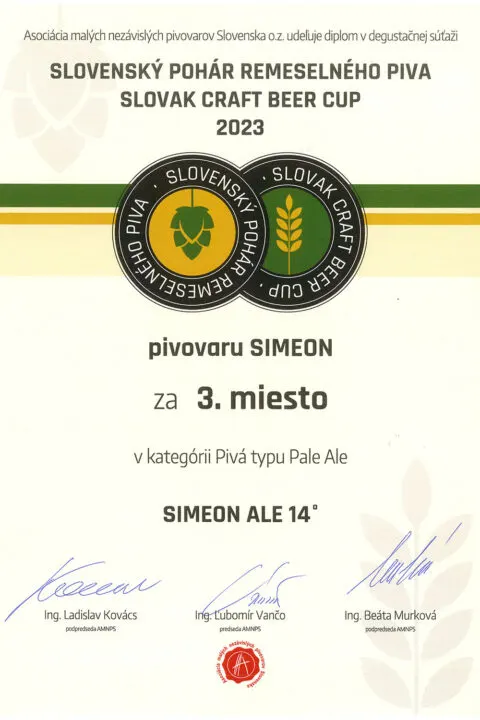
Kontakt
Simeon – remeselný pivovar Piešťany
Mlynská 5026/26
921 01 Piešťany
Ako sa k nám dostať / parkovanie: doplní pivovar
Otváracie hodiny – doplní pivovar
Prehliadky pre skupiny od 5 osôb po dohode – rezervácia e-mailom alebo telefonicky.
E-mailom na info@pivovarsimeon.sk alebo telefonicky na +421 905 979 954. Prehliadka je pre minimálne 5 osôb.
Pivo nefiltrujeme, nepasterizujeme a nepridávame chemické prísady. Skladujte ho na tmavom mieste pri +2 °C až +8 °C, nikdy nie pri izbovej teplote.
Áno – prenájom výčapného zariadenia je 20 € a pivo dodávame v súdkoch 5 l, Party KEG 11 l, KEG 20 l a 30 l.